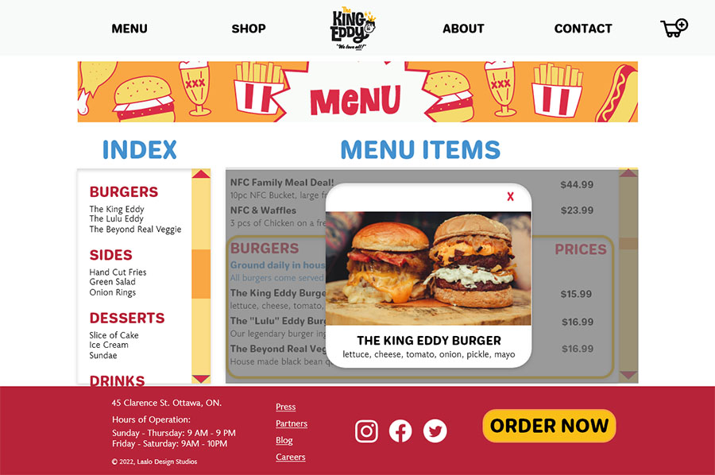
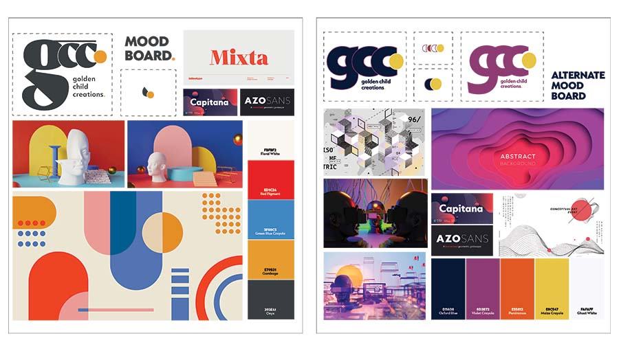
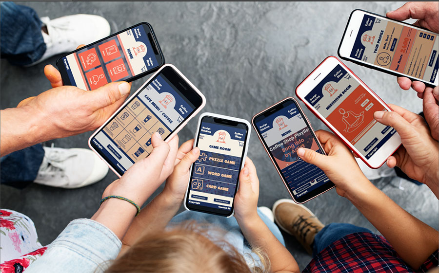

SERVICES.
golden child creations. offers a mix of services for both small and large projects. The designer works efficiently in multiple roles and will her bring cross-disciplinary skills to create multiple products that function spectacularly together.
SERVICES/ROLES INCLUDE
UX / UI DESIGN .
Design thinking practices, interaction design, and information architecture are the pillars of UX/UI design for golden child creations. From website/app development to interactive public experiences, she can handle all steps from research to testing.
Programs: Miro, InVision, Adobe Xd
BRANDING / IDENTITY.
Effective branding and identity is the foundation for any successful business, and golden child creations. wants to help make your vision a reality. Strong design skills coupled with excellent client connections result in beautiful branding, comprehensive guides, and identity that stands out.
Programs: InVision, Adobe Illustrator & InDesign
PRODUCTION / STORYTELLING.
As a curator, one of the designer's strongest skills is building narratives and telling a story. Why not try multiple media to tell yours? Photography, illustration, video, and web design are only some of the production tools golden child creations. can offer. She can handle project management and creation
Programs: Adobe Illustrator, Photoshop, InDesign, Premiere Pro
PUBLIC ENGAGEMENT.
Having developed and implemented public programming for museums and galleries makes golden child creations. especially attuned to the values of interactivity and public engagement. She can conceptualize and design unique experiences through interactivity and immersive encounters, pushed by the digital.